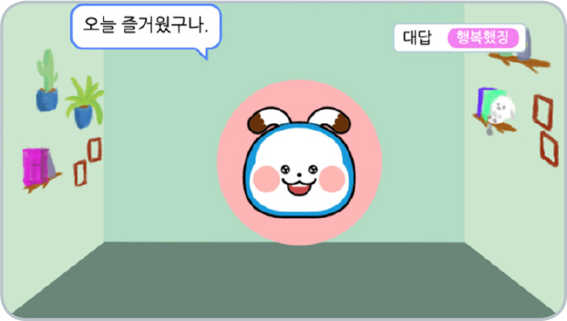

모델 학습
아래의 내용을 바탕으로 모델을 학습시킨다.
| 모델의 종류 | 분류: 텍스트 |
|---|---|
| 학습 모델 이름 | 감정 인식 인공지능 |
| 클래스 이름 | 기쁨, 슬픔 |
| 수집 데이터 | 기쁨과 슬픔을 표현하는 텍스트 데이터 |
| 수집 방법 | 기쁨과 슬픔을 표현하는 텍스트를 직접 입력하기 |
확인하기
1.입력한 데이터는 해당 감정의 특성을 잘 나타내는 문자인가?
2.훈련 데이터의 양은 충분한가?
3.기분을 입력하였을 때 감정을 잘 분류하는가?
프로그래밍
학습한 모델을 활용하여 ‘기쁨’, ‘슬픔’에 적절한 말을 출력하고 그에 맞는 얼굴 모양으로 바꿀 수 있게 프로그래밍한다.
(묶음)얼굴 스티커
화면의 크기를 좌우로 조절하면 블록을 크게 볼 수 있어요.
결과 확인
텍스트를 입력하고 실행 결과를 확인한다.
시작하기 눌렀을 때

분류 결과
이전
다음